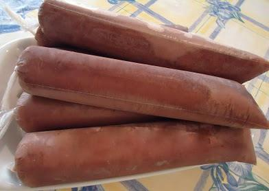

Geladinho

Diferente da torta gelada essa receita possui
um modo de preparo um pouco mais simples e diferentes nomes dependendo da regiao em que voce
mora e.g. geladinho, sacole, chopp ou dindin. Nao vai ser necessario usar o fogao ou batedeira,
no entanto, voce vai ter de ensacar cada um, mas nao isso nao e algo trabalhoso, fique tranquilo
e aproveite a receita. :).
Ingredientes
- Leite, ou agua e leite em po o suficiente para 1 litro de leite.
- Liga neutra, esse e bem importante(nao tente fazer sem >:@).
- Nescau ou farinha de amendoim 500g, escolha seu sabor entre os dois.
- Leite condensado 395g.
- Creme de leite 200g.
- Uma xicara de acucar(CASO ACHE NECESSARIO).
Utensilios
- Liquidificador.
- Sacos pra ensacar, basta procurar em mercados maiores ou lojas de doce.
- Funil.
- Jarra pequena.
- Um copo.
Modo de preparo
- Dentro do liquidificador coloque o leite, ou bata o leite em po com agua.
- Coloque o leite condensado :p.
- Agora o creme de leite.
- Acucar caso ache necessario.
- Acrescente uma colher razoavelmente generosa de liga neutra, uma so.
- Sabor amendoim, adicione a farinha de amendoim, coloque uns 250g/300g, verifique se a mistura esta muito
muito liquida ou grossa, dependendo adicione mais ou menos farinha de amendoim.
- Agora para o sabor chocolate adicione uma quantidade generosa de Nescau, eu coloco pelo menos 5 colheres kkk.
- Preste atencao no proximo passo porque ele e muito importante, tampe o liquidificar ANTES de bater
- Ligue o liquificador.
- Bata por cerca de 20 segundos.
- Essa e a parte dificil, ensacar T.T, coloque uma pequena quantidade no copo e atraves do Funil
preencha uns 3/4 do saco e amarre, conforme voce for amarrando vai perceber onde deve parar antes de
se tornar inconveniente para amarrar.
- Espere ate ele ficar geladinho para comer!
Inicio